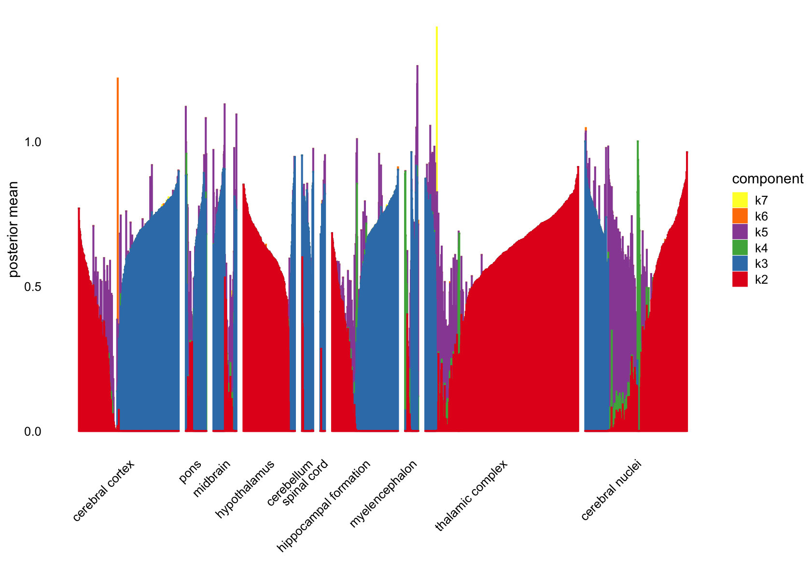

Initial exploration of the human brain dataset: committed OPC cells
Junming Guan
Last updated: 2024-11-05
Checks: 7 0
Knit directory:
single-cell-jamboree/analysis/
This reproducible R Markdown analysis was created with workflowr (version 1.7.1). The Checks tab describes the reproducibility checks that were applied when the results were created. The Past versions tab lists the development history.
Great! Since the R Markdown file has been committed to the Git repository, you know the exact version of the code that produced these results.
Great job! The global environment was empty. Objects defined in the global environment can affect the analysis in your R Markdown file in unknown ways. For reproduciblity it’s best to always run the code in an empty environment.
The command set.seed(1) was run prior to running the
code in the R Markdown file. Setting a seed ensures that any results
that rely on randomness, e.g. subsampling or permutations, are
reproducible.
Great job! Recording the operating system, R version, and package versions is critical for reproducibility.
Nice! There were no cached chunks for this analysis, so you can be confident that you successfully produced the results during this run.
Great job! Using relative paths to the files within your workflowr project makes it easier to run your code on other machines.
Great! You are using Git for version control. Tracking code development and connecting the code version to the results is critical for reproducibility.
The results in this page were generated with repository version 810e5f4. See the Past versions tab to see a history of the changes made to the R Markdown and HTML files.
Note that you need to be careful to ensure that all relevant files for
the analysis have been committed to Git prior to generating the results
(you can use wflow_publish or
wflow_git_commit). workflowr only checks the R Markdown
file, but you know if there are other scripts or data files that it
depends on. Below is the status of the Git repository when the results
were generated:
Untracked files:
Untracked: .DS_Store
Untracked: analysis/human_brain_OPC_cells_fits.RData
Untracked: data/.DS_Store
Untracked: data/human_brain_OPC_cells.rds
Note that any generated files, e.g. HTML, png, CSS, etc., are not included in this status report because it is ok for generated content to have uncommitted changes.
These are the previous versions of the repository in which changes were
made to the R Markdown (analysis/human_brain_OPC_cells.Rmd)
and HTML (docs/human_brain_OPC_cells.html) files. If you’ve
configured a remote Git repository (see ?wflow_git_remote),
click on the hyperlinks in the table below to view the files as they
were in that past version.
| File | Version | Author | Date | Message |
|---|---|---|---|---|
| Rmd | 810e5f4 | junmingguan | 2024-11-05 | workflowr::wflow_publish("human_brain_OPC_cells.Rmd") |
Introduction
This single-nucleus RNA seq dataset is from the paper “Transcriptomic diversity of cell types across the adult human brain” (Siletti, 2023). around 3 millions nuclei were collected from around 100 dissections from the following areas of brains of 3 donors:
Forebrain:
cerebral cortex
cerebral nuclei
hypothalamus
hippocampus formation
thalamus complex
Midbrain
Hindbrain:
pons
cerebellum
Myelencephalon (Medulla)
Spinal cord
The authors performed hierarchical graph-based clustering, grouping the cells into superclusters, clusters, and subclusters. The data can be accessed here, with files organized by supercluster or by dissection.
This exploratory analysis focuses on cells within the supercluster called committed oligodendrocyte precursor (OPC), which consists of non-neuron cells. There are 4720 cells and 59236 genes (31720 genes with at least one nonzero count) in the dataset.
library(Matrix)
# library(MatrixExtra)
library(flashier)
library(fastTopics)
library(ggplot2)
library(cowplot)
library(dplyr)data <- readRDS('../data/human_brain_OPC_cells.rds')
counts <- t(data$RNA$data)
# Warning: package 'SeuratObject' was built under R version 4.3.3map_tissue <- function(tissue) {
if (tissue %in% c("cerebral cortex", "cerebral nuclei", "hypothalamus",
"hippocampal formation", "thalamic complex")) {
return("forebrain")
} else if (tissue == "midbrain") {
return("midbrain")
} else if (tissue %in% c("pons", "cerebellum", "myelencephalon")) {
return("hindbrain")
} else if (tissue == "spinal cord") {
return("spinal cord")
} else {
return(NA)
}
}
regions <- sapply(data$tissue, map_tissue)
t-SNE and UMAP
The dataset includes precomputed tSNE and UMAP embeddings, allowing us to plot them directly. We can color the cells by tissue, by region, or by cluster.
t-SNE
ggplot(Embeddings(data$tSNE) , aes(x = TSNE_1, y = TSNE_2, color = data$tissue)) +
geom_point(alpha = 0.7) +
labs(title = "t-SNE Plot Colored by Tissue Type", x = "t-SNE 1", y = "t-SNE 2") +
theme_minimal() +
scale_color_manual(values = rainbow(length(unique(data$tissue))))
ggplot(Embeddings(data$tSNE) , aes(x = TSNE_1, y = TSNE_2, color = regions)) +
geom_point(alpha = 0.7) +
labs(title = "t-SNE Plot Colored by Tissue Type", x = "t-SNE 1", y = "t-SNE 2") +
theme_minimal() +
scale_color_manual(values = rainbow(length(unique(regions))))
ggplot(Embeddings(data$tSNE) , aes(x = TSNE_1, y = TSNE_2, color = data$cluster_id)) +
geom_point(alpha = 0.7) +
labs(title = "t-SNE Plot Colored by Cluster", x = "t-SNE 1", y = "t-SNE 2") +
theme_minimal() +
scale_color_manual(values = rainbow(length(unique(data$cluster_id))))ggplot(Embeddings(data$UMAP) , aes(x = UMAP_1, y = UMAP_2, color = data$tissue)) +
geom_point(alpha = 0.7) +
labs(title = "UMAP Plot Colored by Tissue Type", x = "UMAP 1", y = "UMAP 2") +
theme_minimal() +
scale_color_manual(values = rainbow(length(unique(data$tissue))))
ggplot(Embeddings(data$UMAP) , aes(x = UMAP_1, y = UMAP_2, color = regions)) +
geom_point(alpha = 0.7) +
labs(title = "UMAP Plot Colored by Tissue Type", x = "UMAP 1", y = "UMAP 2") +
theme_minimal() +
scale_color_manual(values = rainbow(length(unique(regions))))
ggplot(Embeddings(data$UMAP) , aes(x = UMAP_1, y = UMAP_2, color = data$cluster_id)) +
geom_point(alpha = 0.7) +
labs(title = "UMAP Plot Colored by Cluster", x = "UMAP 1", y = "UMAP 2") +
theme_minimal() +
scale_color_manual(values = rainbow(length(unique(data$cluster_id))))Flashier
Before applying matrix factorization methods, we first remove genes without nonzero counts.
cols_to_keep <- colSums(counts != 0, na.rm = TRUE) > 0
reduced_counts <- counts[, cols_to_keep]n <- nrow(reduced_counts)
x <- rpois(1e7, 1/n)
s1 <- sd(log(x + 1))
a <- 1
size_factors <- rowSums(reduced_counts)
size_factors <- size_factors / mean(size_factors)
shifted_log_counts <- log1p(reduced_counts / (a * size_factors))
# shifted_log_counts <- mapSparse(reduced_counts / (a * size_factors),
# fn = log1p)flashier_fit <- flash(shifted_log_counts,
ebnm_fn = ebnm_point_exponential,
var_type = 2,
greedy_Kmax = 7,
S = s1,
backfit = F)
# Adding factor 1 to flash object...
# Adding factor 2 to flash object...
# Adding factor 3 to flash object...
# Adding factor 4 to flash object...
# Adding factor 5 to flash object...
# Adding factor 6 to flash object...
# Adding factor 7 to flash object...
# Wrapping up...
# Done.
# Nullchecking 7 factors...
# Done.plot(flashier_fit,
plot_type = "structure",
pm_which = "loadings",
pm_groups = data$cluster_id,
gap = 25)
plot(flashier_fit,
plot_type = "structure",
kset = 2:7,
pm_which = "loadings",
pm_groups = data$cluster_id,
gap = 25)plot(flashier_fit,
plot_type = "structure",
pm_which = "loadings",
pm_groups = data$tissue,
gap = 25)
plot(flashier_fit,
plot_type = "structure",
kset = 2:7,
pm_which = "loadings",
pm_groups = data$tissue,
gap = 25)
Flashier: semi-nmf
flashier_fit_semi <- flash(shifted_log_counts,
ebnm_fn = c(ebnm_point_exponential, ebnm_point_laplace),
var_type = 2,
greedy_Kmax = 7,
S = s1,
backfit = F)
# Adding factor 1 to flash object...
# Adding factor 2 to flash object...
# Adding factor 3 to flash object...
# Adding factor 4 to flash object...
# Adding factor 5 to flash object...
# Adding factor 6 to flash object...
# Adding factor 7 to flash object...
# Wrapping up...
# Done.
# Nullchecking 7 factors...
# Done.plot(flashier_fit_semi,
plot_type = "structure",
pm_which = "loadings",
pm_groups = data$cluster_id,
bins = 20, gap = 25)
plot(flashier_fit_semi,
plot_type = "structure",
pm_which = "loadings",
pm_groups = data$tissue,
bins = 20, gap = 25)FastTopics
# reduced_counts <- as(reduced_counts, "dgCMatrix")
fasttopics_fit <- fit_topic_model(reduced_counts, k = 7)
# Warning in value[[3L]](cond): Topic SCORE failure occurred; falling back to
# init.method == "random"
# Initializing factors using Topic SCORE algorithm.
# Topic SCORE failure occurred; using random initialization instead.
# Fitting rank-7 Poisson NMF to 4720 x 31720 sparse matrix.
# Running at most 100 EM updates, without extrapolation (fastTopics 0.6-192).
# Refining model fit.
# Fitting rank-7 Poisson NMF to 4720 x 31720 sparse matrix.
# Running at most 100 SCD updates, with extrapolation (fastTopics 0.6-192).plot_progress(fasttopics_fit,x = "iter",add.point.every = 10,colors = "black") +
theme_cowplot(font_size = 10)loglik <- loglik_multinom_topic_model(reduced_counts, fasttopics_fit)
pdat <- data.frame(loglik)
ggplot(pdat,aes(loglik)) +
geom_histogram(bins = 64,color = "white",fill = "black",size = 0.25) +
labs(y = "number of cells") +
theme_cowplot(font_size = 10)
# Warning: Using `size` aesthetic for lines was deprecated in ggplot2 3.4.0.
# ℹ Please use `linewidth` instead.
# This warning is displayed once every 8 hours.
# Call `lifecycle::last_lifecycle_warnings()` to see where this warning was
# generated.
# subpop_colors <- c("dodgerblue","forestgreen","darkmagenta","skyblue","gold", )
subpop_colors <- c("red", "blue", "green", "purple", "orange", "pink", "cyan", "brown", "yellow", "darkgreen")
pdat <- data.frame(loglik = loglik,subpop = data$tissue)
ggplot(pdat,aes(x = loglik,fill = subpop)) +
geom_histogram(bins = 64,color = "white",size = 0.25) +
scale_fill_manual(values = subpop_colors) +
labs(y = "number of cells") +
theme_cowplot(font_size = 10)structure_plot(fasttopics_fit, grouping = data$cluster_id, gap = 25)
structure_plot(fasttopics_fit, grouping = data$tissue, gap = 25)GBCD
TODO
# source("fit_cov_ebnmf.R")
#
# fit.gbcd <-
# flash_fit_cov_ebnmf(Y = reduced_counts, Kmax = 7,
# prior = flash_ebnm(prior_family = "generalized_binary",
# scale = 0.04),
# extrapolate = FALSE)
sessionInfo()
# R version 4.3.1 (2023-06-16)
# Platform: aarch64-apple-darwin20 (64-bit)
# Running under: macOS Sonoma 14.5
#
# Matrix products: default
# BLAS: /Library/Frameworks/R.framework/Versions/4.3-arm64/Resources/lib/libRblas.0.dylib
# LAPACK: /Library/Frameworks/R.framework/Versions/4.3-arm64/Resources/lib/libRlapack.dylib; LAPACK version 3.11.0
#
# locale:
# [1] en_US.UTF-8/en_US.UTF-8/en_US.UTF-8/C/en_US.UTF-8/en_US.UTF-8
#
# time zone: America/Chicago
# tzcode source: internal
#
# attached base packages:
# [1] stats graphics grDevices utils datasets methods base
#
# other attached packages:
# [1] SeuratObject_5.0.2 sp_2.1-4 dplyr_1.1.4 cowplot_1.1.3
# [5] ggplot2_3.5.1 fastTopics_0.6-192 flashier_1.0.54 ebnm_1.1-34
# [9] Matrix_1.6-4
#
# loaded via a namespace (and not attached):
# [1] pbapply_1.7-2 rlang_1.1.4 magrittr_2.0.3
# [4] git2r_0.35.0 horseshoe_0.2.0 compiler_4.3.1
# [7] vctrs_0.6.5 quadprog_1.5-8 stringr_1.5.1
# [10] pkgconfig_2.0.3 crayon_1.5.3 fastmap_1.2.0
# [13] labeling_0.4.3 utf8_1.2.4 promises_1.3.0
# [16] rmarkdown_2.28 purrr_1.0.2 xfun_0.48
# [19] cachem_1.1.0 trust_0.1-8 jsonlite_1.8.9
# [22] progress_1.2.3 highr_0.11 later_1.3.2
# [25] irlba_2.3.5.1 parallel_4.3.1 prettyunits_1.2.0
# [28] R6_2.5.1 bslib_0.8.0 stringi_1.8.4
# [31] RColorBrewer_1.1-3 SQUAREM_2021.1 parallelly_1.38.0
# [34] jquerylib_0.1.4 Rcpp_1.0.13 knitr_1.48
# [37] future.apply_1.11.3 httpuv_1.6.14 splines_4.3.1
# [40] tidyselect_1.2.1 rstudioapi_0.15.0 yaml_2.3.10
# [43] codetools_0.2-19 listenv_0.9.1 lattice_0.21-8
# [46] tibble_3.2.1 withr_3.0.2 evaluate_1.0.1
# [49] Rtsne_0.17 future_1.34.0 RcppParallel_5.1.9
# [52] pillar_1.9.0 whisker_0.4.1 plotly_4.10.4
# [55] softImpute_1.4-1 generics_0.1.3 rprojroot_2.0.3
# [58] invgamma_1.1 truncnorm_1.0-9 hms_1.1.3
# [61] munsell_0.5.1 scales_1.3.0 ashr_2.2-63
# [64] gtools_3.9.5 globals_0.16.3 RhpcBLASctl_0.23-42
# [67] glue_1.8.0 scatterplot3d_0.3-44 lazyeval_0.2.2
# [70] tools_4.3.1 data.table_1.16.2 fs_1.6.4
# [73] dotCall64_1.2 grid_4.3.1 tidyr_1.3.1
# [76] colorspace_2.1-1 deconvolveR_1.2-1 cli_3.6.3
# [79] Polychrome_1.5.1 workflowr_1.7.1 spam_2.11-0
# [82] fansi_1.0.6 mixsqp_0.3-54 viridisLite_0.4.2
# [85] uwot_0.1.16 gtable_0.3.6 sass_0.4.9
# [88] digest_0.6.37 progressr_0.14.0 ggrepel_0.9.6
# [91] htmlwidgets_1.6.4 farver_2.1.2 htmltools_0.5.8.1
# [94] lifecycle_1.0.4 httr_1.4.7